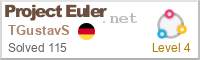
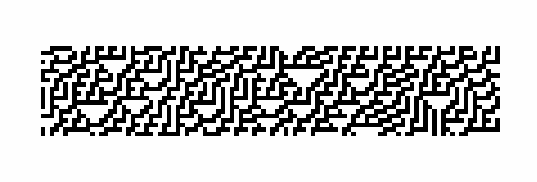

Ein kleines Projekt für die Promotion meiner Band.
Code
In dieser Sektion sind einige Projekte die ich als Vorbereitung für mein Master Studium in
Computer Science gemacht habe. Klicke gerne auf die Links um mehr darüber zu erfahren.
Da
ich während meines Bachelor Studiums in Mathematik mich
hauptsächlich mit Topologie und Algebra beschäftigt habe, hatte ich bis vor meinem Master wenig
bis gar keine Erfahrung mit Programmieren. Weshalb ich natürlich einiges Nachholen musste.
Dafür habe ich mir im Selbststudium ein halbes Jahr möglichst viele Themengebiete angeschaut.
Zuerst habe ich dafür Codecademy benutzt,
da die Seite super hilfreich ist, die Grundlagen in sehr vielen verschiedenen
Bereichen zu schnell zu lernen.
Danach habe ich sehr exzessiv Probleme auf Project Euler gelöst, bis ich dort zu
den Top 1% der User gehörte. Meiner
Meinung nach ist Project Euler die beste Seite seine
Programmierfähigkeiten zu verbessern, da die Probleme auf eine Art und Weise gestellt sind,
dass
man zum einen gezwungen ist effizienten und guten Code zu schreiben und man trotzdem dabei
mathematisch interessante Probleme löst. So muss man zum Beispiel bei Problem 96 einen Solver
für Sodokus schreiben, also ein sehr direktes programmierlastiges Problem und bei Problem 235
Wege finden eine arithmetisch-geometrische Sequenz so zu vereinfachen, dass man sehr große
Werte
berechnen kann, also ein sehr mathematisches Problem.
Als nächstes habe ich mich etwas an Data Science versucht. Dafür habe ich an einer Practice Competition auf
Kaggle
teilgenommen und bin eigentlich ganz zufrieden mit meinem Ergebnis.
In meinem Studium habe ich mehr in diesem Bereich gemacht und finde besonders interessant
auf
Graph Strukturen zu lernen. Hier sind einige von
den
Übungsaufgaben aus der Vorlesung.

Ansonsten habe ich in der Zeit noch ein bisschen mit zellulären Automaten herumgespielt, da
ich
währenddessen
das Buch 'A New Kind of Science' von Stephen Wolfram gelesen habe und die Ideen darin sehr
interessant
fand.
Website
Diese Website basiert auf der HTML5 UP Vorlage Editorial. Und wird über Github Pages gehostet.
Ich habe mich entschieden die Seite mit HTML5 UP zu machen, da man mit den Vorlagen echt
schnell gut aussehende Websiten erstellen kann.
Ich habe außerdem noch die Website von einer Band, ebenfalls mit
HTML5 Up, erstellt, in der ich mitspiele.
Sonstiges
Ansonsten bin ich ein großer Fan von programmier Rätseln wie zum Beispiel dem hier von Calm Code. Hier sind meine
Lösungen dazu. Wenn du noch ähnliche Seiten kennst schreib mir gerne.
Zukunft
In Zukunft würde ich gerne mehr Programmiersprachen lernen um ein tieferes Verständis für das
Programmieren zu entwickeln, um mir dann das Buch Category Theory for Programmers von
Bartosz Milewski erarbeiten zu können.